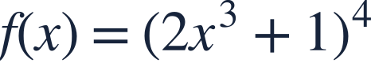
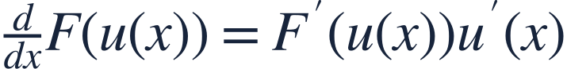
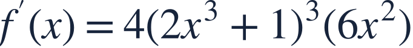
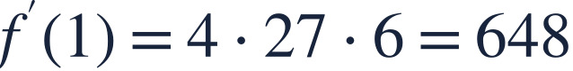
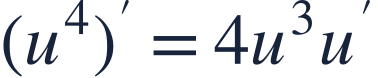
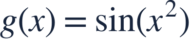

The chain rule
연쇄법칙

An outer power contains an inner function. Both layers contribute to the derivative.
바깥 거듭제곱 안에 함수가 있습니다. 두 층의 변화율을 함께 반영합니다.

An outer power contains an inner function. Both layers contribute to the derivative.
바깥 거듭제곱 안에 함수가 있습니다. 두 층의 변화율을 함께 반영합니다.
Recall the power rule, then identify what sits inside the power.
거듭제곱 미분법을 복습하고 거듭제곱 안의 식을 찾으세요.

Differentiate the outside, keep the inside, then multiply by the inside derivative.
안을 유지하며 바깥을 미분하고, 안의 도함수를 곱합니다.
The inside is not just x, so its derivative is essential.
안이 단순히 x가 아니므로 안의 미분이 꼭 필요합니다.

Multiply the outer derivative by the inner derivative.
바깥 미분과 안의 미분을 곱합니다.

Substitute only after completing both layers.
두 층의 미분을 마친 뒤 값을 대입합니다.

Leaving out the inner derivative loses the chain rule.
안의 도함수를 빠뜨리지 마세요.

Find g′(x).
g′(x)를 구하세요.